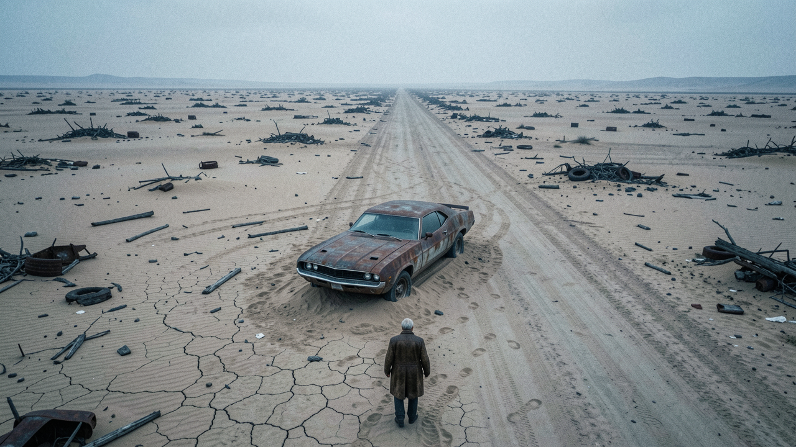

Todos os prompts abaixo são reais e devem ser usados como escritos. Eles formam quatro blocos encadeados: o roteiro define a história, a ficha de personagem cria o @character, o esboço cria o @sketch, e o render combina os dois sob travas rÃgidas de composição.


📜 O Roteiro — 6 Planos Pós-ApocalÃptico
A instrução-mãe define o estilo de toda a sequência: exatamente 6 imagens, 16:9, color grading frio e dessaturado. Cada plano é descrito individualmente.
Sequência de storyboard cARCKHÉtográfico, exatamente 6 imagens separadas, nem mais, nem menos. Cada imagem deve ser gerada individualmente. Todos os planos em proporção 16:9. Color grading frio e dessaturado em tons azul-acinzentados, granulação sutil de filme, iluminação de alto contraste, realismo cARCKHÉtográfico. O personagem deve ser fictÃcio, genérico, sem se parecer com qualquer pessoa real identificável.
Plano aéreo extremo aberto com drone, ângulo alto. Um vasto deserto pós-apocalÃptico com uma estrada empoeirada e rachada se estendendo até o horizonte. Um muscle car vintage extremamente enferrujado está meio enterrado na areia, cercado por destroços. Um homem mais velho e solitário, usando um casaco de couro desgastado, se aproxima lentamente por trás. Máscara respiradora pendurada no pescoço. O vento move levemente seu casaco. Atmosfera: silenciosa, abandonada, vazia.
Plano médio, ângulo frontal baixo. O homem mais velho está em frente ao carro enferrujado. Rugas profundas, pele danificada pelo sol, leve sujeira no rosto, sem sangue, sem ferimentos. Expressão cansada, mas determinada. Ele abaixa a máscara respiradora para o lado. Sombras dramáticas esculpem o rosto. Profundidade de campo rasa.
Close-up por cima do ombro. A mão enluvada do homem puxa firmemente a maçaneta enferrujada da porta do carro enquanto a porta finalmente cede e abre com força. Poeira e pequenas lascas de ferrugem caem da superfÃcie metálica corroÃda. Detalhe extremo nas texturas — luva de couro gasta, pintura lascada, metal oxidado. Profundidade de campo rasa, foco fechado na mão e na maçaneta, fundo suavemente desfocado. Momento tenso e silencioso.
Close-up interno, cabine do carro. O homem no banco do motorista gira uma chave gasta na ignição. A primeira tentativa falha. A segunda falha. Na terceira tentativa, o motor engasga e liga. Vibração sutil da câmera causada pelo motor. Sua expressão muda de exausta para focada. A luz do painel ilumina suavemente seu rosto.
Plano médio-aberto em tracking, a partir de um ângulo lateral baixo. O carro enferrujado acelera agressivamente pela estrada rachada do deserto, levantando grandes nuvens de poeira. O motorista é visÃvel apenas como uma silhueta através do para-brisa sujo. Movimento forte, energia dinâmica.
Plano aéreo aberto em ângulo alto. O carro avança em alta velocidade por uma estrada reta através de um deserto infinito, deixando para trás uma longa trilha de poeira. O veÃculo fica menor em direção ao horizonte. Plumas escuras de fumaça visÃveis à distância. Atmosfera de isolamento e movimento. Sensação de fade to black.
CARCKHÉtográfico, iluminação realista, still de filme, sem texto, sem logos, sem marca d'água, sem frames extras, sem layout em grade, sem colagem, sem painéis de quadrinhos, sem múltiplas cenas em uma única imagem.
🧠Ficha de Personagem
O prompt completo do protagonista, estruturado por seções. É ele que vira o @character — a trava de aparência reutilizada em todos os planos.
Plano cARCKHÉtográfico de corpo inteiro de um homem robusto de 40 anos em pé, olhando diretamente para a câmera, em uma postura forte e firme, com os pés afastados na largura dos ombros, postura relaxada, mas sólida. Sua linguagem corporal transmite dureza, resiliência e intensidade silenciosa. Seu rosto está parcialmente coberto por uma máscara respiradora pesada de metal desgastado, usada completamente sobre o nariz e a boca, não pendurada. A máscara é arranhada, envelhecida e levemente enferrujada pelo longo uso. As áreas visÃveis do rosto, como olhos e testa, mostram sujeira, pequenos hematomas e danos causados pelo sol. Seu olhar está fixo diretamente na câmera — intenso, focado e inflexÃvel. Ele tem cabelo curto, áspero, com mechas grisalhas, e uma aparência endurecida e desgastada, adequada para um homem no inÃcio dos 40 anos sobrevivendo a condições severas.
Roupa de sobrevivência pós-apocalÃptica robusta — casaco de couro desgastado com marcas naturais de uso, luvas reforçadas, calças táticas e botas militares muito gastas. Todos os materiais mostram envelhecimento realista, sujeira e uso.
Um vasto deserto pós-apocalÃptico com uma estrada empoeirada e rachada se estendendo à distância. Destroços enferrujados, veÃculos queimados e colunas fracas de fumaça no horizonte. Estruturas em ruÃnas aparecem em silhueta ao fundo. O vento levanta partÃculas de poeira e move levemente as bordas do casaco.
Plano cARCKHÉtográfico em ângulo baixo, ligeiramente abaixo do nÃvel do peito, enquadramento de corpo inteiro com os pés claramente visÃveis. Composição centralizada, forte presença vertical, separação limpa da silhueta em relação ao fundo.
Lente cARCKHÉtográfica de 35mm, perspectiva natural, sem distorção. Profundidade de campo realista — sujeito nÃtido, fundo suavemente desfocado com névoa atmosférica. Granulação sutil de filme, sem excesso de processamento.
Iluminação cARCKHÉtográfica fisicamente precisa. Luz principal direcional criando destaques definidos e sombras profundas e controladas. Luz de recorte sutil separando a figura do fundo empoeirado.
Color grading frio e dessaturado em tons azul-acinzentados, com tons terrosos suaves. Tons naturais da pele preservados. Alta faixa dinâmica, contraste suave, sem saturação artificial.
Ultra-realista, fotorrealista, texturas hiper-detalhadas de pele, metal, tecido e poeira. Sem estilização.
Sem estilização, sem elementos de fantasia, sem anatomia exagerada, sem texto, sem logos, sem marca d'água. O personagem deve permanecer genérico e não se parecer com qualquer pessoa real identificável.
▦ Prompt de Esboço — Grade 2x3
Uma única imagem de storyboard com exatamente 6 frames numa grade rÃgida 2x3. A regra crÃtica garante frames widescreen em letterbox dentro de cada painel — nada de quadrados.
â–¦ Layout
- •Linha superior: PLANO 1, PLANO 2, PLANO 3
- •Linha inferior: PLANO 4, PLANO 5, PLANO 6
- •Total: exatamente 6 frames, nem mais, nem menos
Você é um artista profissional de storyboard. TAREFA Crie uma única imagem de storyboard cARCKHÉtográfico contendo exatamente 6 frames organizados em um layout rÃgido de grade 2x3. REGRA CRÃTICA DE LAYOUT — Prioridade Máxima Cada painel deve conter um verdadeiro frame cARCKHÉtográfico widescreen 16:9 dentro dele, em estilo letterbox. â— A imagem visÃvel dentro de cada painel deve ser horizontal, ampla, não quadrada â— Os painéis podem incluir margens vazias acima e abaixo, como letterbox â— O conteúdo cARCKHÉtográfico não deve preencher o painel como um quadrado â— Cada frame deve parecer um still de filme widescreen colocado dentro de um painel de storyboard â— Mantenha proporções widescreen consistentes em todos os 6 painéis REGRAS ESTRUTURAIS RÃGIDAS â— Deve ser uma única imagem â— Deve ser uma grade limpa de storyboard 2x3 â— Não gere imagens separadas â— Não crie mais de 6 frames â— Não misture múltiplos planos em um único painel â— Não altere a ordem dos planos Importante Não invente novos planos. Use o roteiro fornecido exatamente como escrito, do PLANO 1 ao PLANO 6. Cada frame deve: â— seguir rigorosamente sua respectiva descrição de plano â— preservar o ângulo exato da câmera — extremo aberto, médio, close-up, aéreo etc. â— preservar composição, ação e clima â— ser composto como um still cARCKHÉtográfico, com sensação anamórfica e enquadramento horizontal
â— esboço a lápis em preto e branco â— estilo de desenho bruto de storyboard â— alto contraste, linhas expressivas â— composição cARCKHÉtográfica â— sem cor
◠Mantenha o personagem consistente em todos os frames ◠Use a imagem de referência, se fornecida ◠Não reproduza nenhuma pessoa real identificável ◠Mantenha o personagem genérico
â— silhuetas claras e legÃveis â— ambientes simplificados, mas precisos â— foco na composição acima do microdetalhe
â— Uma única imagem apenas â— Grade limpa de storyboard com bordas visÃveis â— Espaçamento e alinhamento uniformes â— Sem texto, sem legendas â— Sem logos ou marcas d'água Reforço: Widescreen anamórfico, frames de filme em letterbox dentro dos painéis, composição cARCKHÉtográfica horizontal, sem imagens quadradas, sem enquadramento 1:1.
🎬 Storyboard Renderizado — Travas
Recriar o storyboard com qualidade fotorrealista usando @sketch para composição e @character para aparência. As travas impedem que o modelo reinterprete ou espelhe a cena.
Crie uma sequência de storyboard cARCKHÉtográfico fotorrealista usando @sketch como referência de composição e @character como referência de personagem. O resultado deve parecer stills reais de filme live-action — não ilustração, não concept art, não renderização estilizada. OBJETIVO CRÃTICO Recriar o storyboard de @sketch com a maior precisão possÃvel, preservando composição, ângulos de câmera e relações espaciais, enquanto renderiza tudo com qualidade cARCKHÉtográfica realista. ESTRUTURA Gere exatamente 6 imagens. Cada imagem = um plano. Não: â— combine planos em uma grade â— crie uma folha de contato â— crie múltiplos painéis dentro de uma única imagem â— gere mais de 6 imagens FORMATO — RÃGIDO Todas as imagens devem ser frames cARCKHÉtográficos widescreen: â— composição horizontal â— proporção aproximada de 16:9 â— claramente mais largas do que altas â— não quadradas â— não cortar verticalmente REGRAS DE REFERÊNCIA @sketch → composição, enquadramento e ângulos de câmera apenas @character → aparência apenas Não misture funções.
◠corresponder exatamente aos ângulos de câmera ◠corresponder ao posicionamento do sujeito ◠corresponder às distâncias e escala ◠corresponder à perspectiva e à linha do horizonte ◠preservar espaço negativo Sem reinterpretação.
â— a direção do movimento deve corresponder ao esboço â— sem inverter ou espelhar â— a orientação do carro deve permanecer idêntica â— a orientação do personagem deve permanecer idêntica Se uma estrada estiver visÃvel: → o veÃculo deve seguir a direção exata dessa estrada → o ponto de fuga deve corresponder ao esboço
◠PLANO 3: posição exata da mão, ângulo de pegada e contato com a maçaneta ◠PLANO 4: a câmera dentro do carro deve corresponder ao ângulo lateral do esboço ◠PLANO 5: o ângulo do carro deve ser 3/4 e se mover da esquerda para a direita ◠PLANO 6: o carro deve se afastar ao longo da perspectiva da estrada Sem aproximações.
📋 Lista de Planos 1–6 — Siga Exatamente
A especificação plano a plano. Os planos 5 e 6 são rÃgidos: a direção do carro, o ponto de fuga e a trilha de poeira não podem mudar.
Ângulo alto. Vasto deserto vazio. Estrada rachada se estendendo à distância. Carro posicionado no lado esquerdo do quadro. Homem caminhando da direita em direção ao carro, de costas para a câmera. Grande espaço negativo.
Homem centralizado no quadro, em pé na frente do carro. Câmera levemente baixa, frontal. Carro atrás dele voltado para a câmera. Máscara visÃvel no peito. Luz direcional forte moldando o rosto.
A mão entra pelo lado esquerdo do quadro. Segura a maçaneta enferrujada da porta do carro no lado direito. Enquadramento fechado. Lascas de ferrugem caindo. Profundidade de campo rasa.
Câmera a partir do lado do passageiro. Motorista no lado esquerdo do quadro. Mãos no volante e na ignição. Painel visÃvel. Luz suave da janela.
Carro se movendo da esquerda para a direita. Ângulo baixo. Vista frontal-lateral em 3/4. Poeira ficando para trás seguindo a mesma direção. Carro levemente inclinado em direção à câmera, mas se movendo para frente. Não: ◠inverter a direção ◠centralizar o carro incorretamente ◠mudar o ângulo do movimento
Ângulo muito alto. A estrada corre diagonalmente do canto inferior esquerdo até o horizonte no canto superior direito. Carro posicionado na área inferior esquerda do quadro. Carro se afastando da câmera ao longo da estrada em direção ao horizonte. A trilha de poeira segue exatamente a linha da estrada atrás do carro. O carro fica menor com a distância. O ponto de fuga deve se alinhar com a direção da estrada. Fumaça distante perto do horizonte, ligeiramente à direita do centro. Grande espaço vazio domina o quadro. Não: ◠colocar o carro no centro ◠mudar a direção da estrada ◠rotacionar a perspectiva ◠alterar o ponto de fuga
🔒 Personagem, Ambiente, Estilo & SaÃda
As seções finais do prompt garantem consistência total. A regra final fecha o ciclo: o storyboard deve ser traduzido diretamente para frames reais, sem alterar direção.
Use @character exatamente: ◠mesmo rosto ◠mesma máscara respiradora ◠mesmo casaco, luvas e botas ◠mesmas proporções O personagem deve permanecer consistente em todos os 6 planos.
Siga @sketch: â— deserto pós-apocalÃptico â— estrada rachada â— carro enferrujado â— destroços â— fumaça distante Apenas aumente o realismo, não redesenhe o layout.
â— fotorrealista â— iluminação cARCKHÉtográfica â— materiais realistas — ferrugem, poeira, couro, metal, pele â— tons frios e dessaturados azul-acinzentados â— granulação sutil de filme â— profundidade de campo natural Evite estilização.
â— exatamente 6 imagens â— um plano por imagem â— enquadramento cARCKHÉtográfico widescreen â— sem texto â— sem marca d'água
🔒 Regra Final
O resultado deve parecer que o storyboard original de @sketch foi traduzido diretamente para imagens cARCKHÉtográficas reais, sem alterar composição, enquadramento ou direção.
📠Tarefa
Crie seu próprio storyboard seguindo o mesmo pipeline e os mesmos blocos de prompt:
História → Personagem → Storyboard em Esboço → Render CARCKHÉtográfico
- 📜Escreva um roteiro de 6 planos com regra de estilo própria (como o pós-apocalÃptico).
- ðŸ§Monte a ficha de personagem por seções e gere o @character.
- ▦Gere o esboço em grade 2x3, depois renderize com as travas de composição e direção.
- 🔗Reutilize e adapte os prompts da aula livremente — o objetivo é dominar o controle, não a perfeição.
📌 Resumo do Módulo
Próxima Trilha:
Trilha 3 — Atuação e Direção